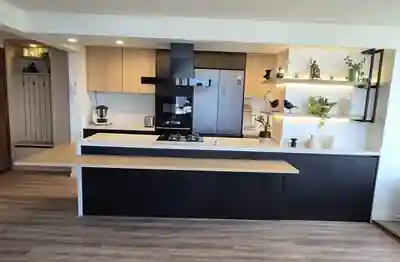
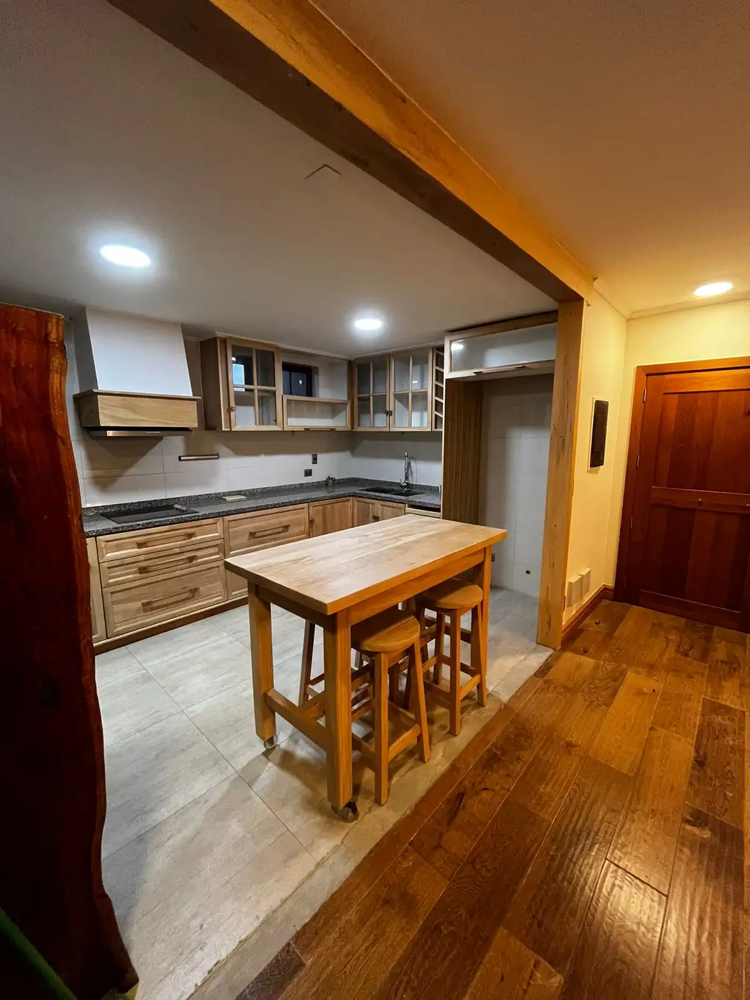

Cocinas a medida en Puerto Montt y el sur de Chile
Conoce trabajos reales de Burdeo Renovaciones: cocinas terminadas, procesos de obra y soluciones pensadas para el uso diario, el almacenamiento y la distribución de cada hogar.
Transformaciones reales
Proyectos realizados por Burdeo Renovaciones en Puerto Montt, Puerto Varas y otras comunas de la Región de Los Lagos.

Nuevo · Puerto MonttProyecto Departamento
Cocina integrada documentada desde la obra hasta el resultado final.
Ver proyecto → Nuevo · Puerta Sur
Nuevo · Puerta SurProyecto Puerta Sur
Isla central, mobiliario oscuro y cielo de listones con iluminación cálida.
Ver proyecto → Cocina
CocinaProyecto William
Diseño moderno con líneas limpias y almacenamiento funcional.
Ver proyecto → Cocina
CocinaProyecto Luigi
Renovación funcional con optimización de espacios y estética contemporánea.
Ver proyecto → Cocina
CocinaProyecto FT
Renovación integral con foco en almacenamiento y aprovechamiento vertical.
Ver proyecto →
DepartamentoProyecto Deptos PV
Diseño moderno orientado a aprovechar al máximo una planta compacta.
Ver proyecto → Cocina
CocinaCasa Katya
Concepto abierto con isla central y una composición de líneas simples.
Ver proyecto → Segunda etapa
Segunda etapaCasa Katya · Fase 2
Avances y detalles complementarios del proyecto de concepto abierto.
Ver proyecto → Cocina
CocinaCasa del Lago
Una propuesta clara y cálida integrada a la identidad del sur.
Ver proyecto → Cocina
CocinaProyecto Chacana
Diseño rústico contemporáneo adaptado a un entorno residencial del sur.
Ver proyecto →Una cocina se diseña desde cómo la vas a usar
En una remodelación importan la circulación, las medidas, las instalaciones, la iluminación y el almacenamiento tanto como el acabado final. Por eso partimos desde el espacio existente y las necesidades reales del hogar.
Atendemos proyectos en Puerto Montt y distintas comunas de la Región de Los Lagos, según ubicación, alcance y requerimientos.
Aspectos que podemos integrar
Cuéntanos qué quieres transformar
Envíanos tu comuna, algunas medidas aproximadas y fotos del espacio. Eso nos ayuda a entender mejor tu proyecto desde el primer contacto.